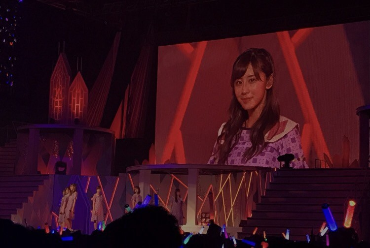
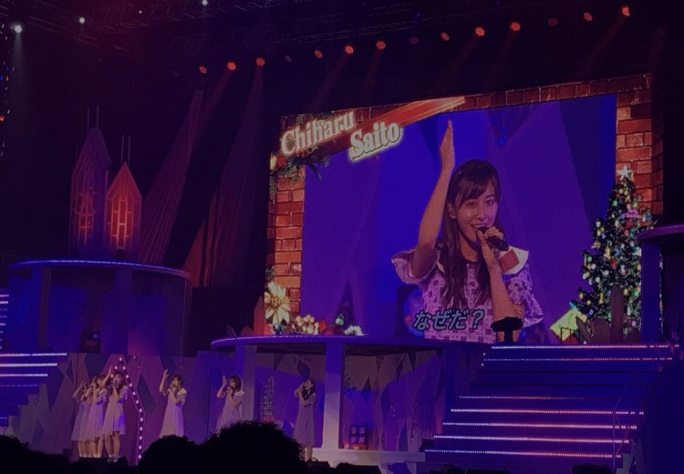
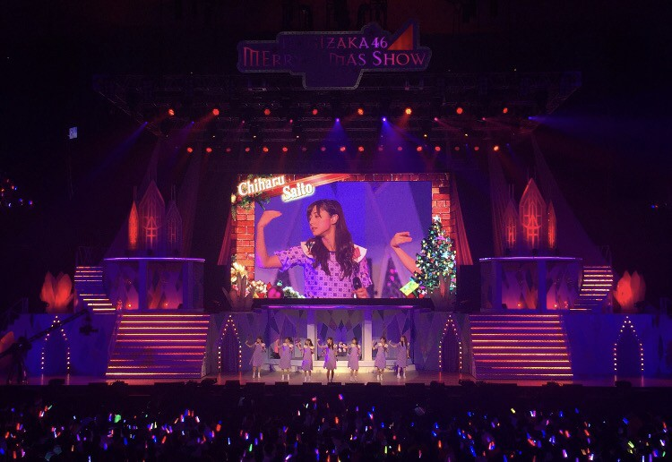
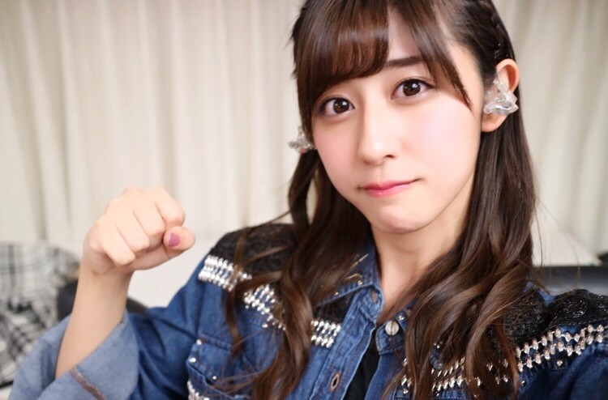

| 2016/12 23 Fri | 初の映像化。 |
ちはるーむへようこそ。
スカパー!さんにて
12/9のアンダー単独公演が放送されました◎
今まで全国ツアーや
全体でのクリスマスライブは
映像になっていましたが、
今回初めてアンダーライブが映像に...！
とても嬉しいですヽ(；；)丿
スカパー!さんに感謝ですヽ(；；)丿
そしていつかライブDVDが出来たらいいな。
中々来れない方にも
是非見て欲しいアンダーライブだから。
今日はそのアンダーライブの写真を
載せちゃいます◎
以前も沢山載せていたけど
載せたことなかったやつ！！
センター企画『バレッタ』の私。
バレッタの時の表情を
ファンの方が褒めてくれることが多かったので
写真を載せちゃいます◎
でも何故か少し面白い写真が多い...笑
客席からわざわざマネージャーさんが
撮ってくれていました...！

曲が終わる、本当にラストの時の顔。
ドヤ顔が半端ない...笑
凄いドヤっている...笑
これもマネージャーさんが撮ってくれたやつ。

"なぜだ？"の、だ〜の部分の顔。
一番ラストのカッコよく
決めなきゃいけないところなのに
凄い笑っちゃっている...
それこそ"なぜだ？"
これは見に来てくれていた
まいちゅんが撮ってくれた写真！

首...
輪郭...
まさかこの瞬間が撮られているとは(笑)
そしてステージのライティングも
赤と青にしてくれている気がします...！
サイリウムカラー、素敵すぎるし、
そんなステージで歌えていることが幸せ(﹡ˆ ˆ﹡)
ファンの皆さんも赤と青に
してくれている方も多くて、
物凄く嬉しかったです♡
何事にも感謝してもしきれません☺︎

ステージ上での集合写真を撮る前に、
早めに集まったメンバーと◎
7日に撮ったので
初日お疲れ様！という気持ちと
9日も頑張ろう！という気持ち。

ライブ前に、頑張るぞ！という気持ちを込めて
ガッツポーズ？グーパンチ？グータッチ？
をしている写真( ¨̮ )
ブランコの衣装本当好き♡
----------------------------------------♡
♬ ChihaMusic
「チキンライス」浜田雅功さん槇原敬之さん
小さい頃からよく
車の中で聞いてたので馴染み深いです。
クリスマスといえばこの曲！と
子供ながらに思っていました。
"今日はクリスマス
街はにぎやか お祭り騒ぎ
七面鳥はやっぱり照れる
俺はまだまだチキンライスでいいや"
このサビの歌詞が好き。
大人になって少し見栄を張るけど
でもやっぱりチキンライスが良いっていう
このもどかしさと照れくささ。
とても素敵です。
アンダーライブ、この時クリスマスは
まだまだ早かった気がするけど
もう明日はクリスマスイヴ！
時間が経つのは早いな〜( ´ｰ`)
斎藤家、お祝い事はすき焼きなので
明日もぶれずにすき焼きです。笑
七面鳥でもチキンライスでもないよ！
おやすみ〜
斎藤ちはる
コメント(243)
2016/12/23 23:58